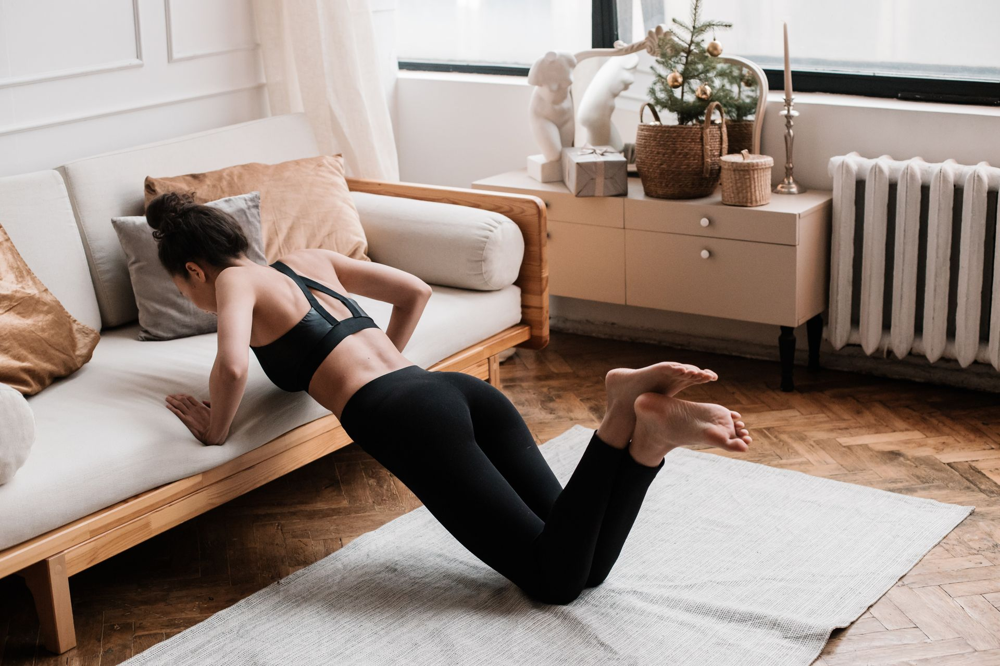

Routine de 20 minutes pour s'entraîner chez soi, sans y passer sa vie

Le matériel, c'est bien, mais sans structure claire, on tourne vite en rond. Voici une routine complète de 20 minutes, testée et simple à suivre, qui fonctionne aussi bien avec juste un tapis de sport qu'avec des élastiques ou des haltères en plus.
Pourquoi 20 minutes suffisent
La croyance la plus répandue (et la plus fausse) sur le sport à la maison : il faudrait une heure pour que ça "compte". En réalité, une séance courte mais complète, faite régulièrement, bat largement une séance longue faite une fois de temps en temps.
- 20 minutes, c'est réalisable même dans une journée chargée — donc plus facile à tenir dans la durée
- Une séance courte réduit la tentation de "reporter à demain"
- La régularité (3x par semaine minimum) prime largement sur la durée d'une séance isolée
La structure de la routine
4 blocs de 5 minutes chacun. Simple à retenir, facile à adapter à ton niveau.
Bloc 1 — Échauffement (5 min)
L'objectif est d'augmenter la température corporelle et de mobiliser les articulations, pas de fatiguer les muscles.
- 1 min de jumping jacks (ou marche rapide sur place si tu veux moins d'impact)
- 1 min de rotations d'épaules et de hanches
- 1 min de talons-fesses
- 1 min de montées de genoux
- 1 min d'étirements dynamiques légers (fentes marchées, cercles de bras)
Bloc 2 — Bas du corps (5 min)
Avec ou sans élastique autour des cuisses pour plus d'intensité.
- 15 squats
- 10 fentes par jambe
- 30 secondes de pont fessier (isométrique) puis 15 répétitions dynamiques
- Répète l'enchaînement une seconde fois si le temps le permet
Bloc 3 — Haut du corps et gainage (5 min)
Avec des haltères si tu en as, sinon au poids du corps.
- 10-15 pompes (sur les genoux si besoin, ça reste efficace)
- 15 rowings à l'élastique ou à l'haltère
- 30 secondes de gainage (planche)
- 10 dips sur une chaise stable
Bloc 4 — Cardio et retour au calme (5 min)
- 2 minutes de mountain climbers ou de jumping jacks pour finir sur un pic d'intensité
- 3 minutes d'étirements statiques (jambes, dos, épaules), respiration calme
Comment adapter selon ton niveau
- Débutant complet — réduis les répétitions de moitié, privilégie la qualité d'exécution à la quantité
- Niveau intermédiaire — ajoute une deuxième série sur les blocs 2 et 3, ou intègre des élastiques/haltères pour plus de résistance
- Peu de temps un jour donné — fais uniquement les blocs 2 et 3 (10 minutes), c'est toujours mieux que rien
Ce qu'il te faut vraiment pour cette routine
Le strict minimum : un tapis de sport et de l'espace au sol. Les élastiques et haltères sont un vrai plus pour progresser en intensité une fois la routine maîtrisée au poids du corps, mais ne sont pas indispensables pour commencer dès aujourd'hui.
Les erreurs à éviter
- Sauter l'échauffement — même 5 minutes de plus, ça réduit vraiment le risque de blessure
- Vouloir tout faire à intensité maximale dès le premier bloc — garde de l'énergie pour l'ensemble de la séance
- Négliger la respiration pendant l'effort — bloquer sa respiration augmente inutilement la fatigue
- Comparer sa séance à celle de quelqu'un d'autre — la routine s'adapte à toi, pas l'inverse
En résumé
20 minutes, 4 blocs, zéro excuse. Cette routine fonctionne avec le strict minimum (un tapis) et progresse naturellement avec des élastiques ou des haltères. La clé n'est pas l'intensité d'une seule séance, c'est la régularité sur plusieurs semaines.
Cet article contient des liens affiliés Amazon vers d'autres articles du blog. Si tu achètes via ces liens, je touche une petite commission, sans surcoût pour toi.